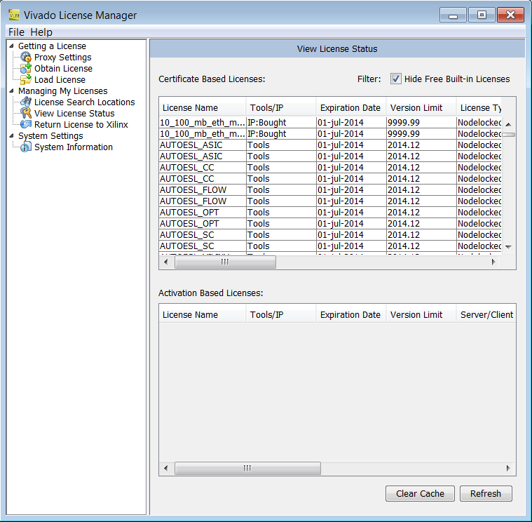

When you install SDK, the Vivado License Manager is also installed on your system and runs at the end of the installation.
You can also run the Vivado License Manager by selecting Manage Xilinx Licenses from the SDK or Vivado folder in the Start menu.
